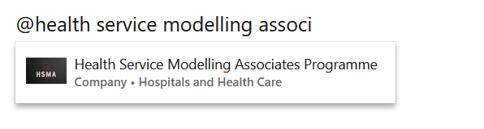

The HSMA Programme is accredited by the Association of Professional Healthcare Analysts (AphA) and all participants are able to cite this as part of their participation. However, we also recognise that some participants may want to receive a digital certificate to confirm their completion of the programme. To this end, we provide optional certification via Accredible.
To ensure that we are only certifying those that have adequately engaged with the course, if a participant would like to be certified, we require some evidence that a participant has both
- undertaken and sufficiently engaged with the training provided as part of the programme, and
- is able to apply at least some of the skills taught.
For participants in HSMA 6, we have provided two options for those who wish to receive a certificate.
Participants may either
- Provide their HSMA project work as evidence or
- Undertake the HSMA 6 Assessment
It should be noted that participants only need to choose ONE of these options if they want certification, and there is no difference in certification between the two options. Participants can only be certified once.
It is also important to note that the certification does not represent a formal academic award, simply a ‘stamp’ of completion of the HSMA programme.
Option 1: Provide their HSMA project work as evidence
Students may choose to provide their HSMA project work as evidence of their engagement and ability to apply the skills taught.
This is the recommended option for most participants, as it provides us with a more accurate picture of a participant’s ability to use the skills taught in practice over time, and does not require the participant to undertake a separate piece of work under examination conditions.
The key steps in the process are:
A sample message is provided below, which you can copy into Slack and amend with your links.
*Project Submission Request*
Hi @Dan Chalk (Programme Lead) and @Sammi Rosser { HSMA Trainer }
This project is ready to be submitted for accreditation, covering the following people:
FILL IN NAMES OF PEOPLE IN PROJECT TEAM
Project Github Link: PROVIDE GITHUB LINK
I confirm that the project reporting form has been filled in.Our certificate provider, Accredible, will provide a link to share your achievement on LinkedIn - we’d love to be tagged if you do post about it!

Common Questions about Certification via the Project Route
The following section will hopefully cover any additional questions you may have about the process. If your question is not covered, please reach out to Dan or Sammi on Slack.
I’m not sure if my project is ready to be submitted
It’s important to remember that, for you to receive the digital certificate confirming completion of the HSMA programme, your project does not have to
- be ‘complete’
- have been used in your organisation to make a decision
(although we will be absolutely delighted if any of those are the case!)
Remember that we are looking simply for evidence that you have undertaken and sufficiently engaged with the training provided as part of the programme, and are able to apply at least some of the skills taught.
We’re not looking for absolutely perfect code or a huge codebase - just enough to evidence that you are able to write code and make use of one or more of the techniques/topics taught on the course.
If in doubt, submit - you will be able to resubmit at a later date if it is deemed that your project is not yet sufficiently advanced for us to award the certificate.
You may find it helpful to take a look at the HSMA assessment solutions to gauge the level of code we might be expecting. Remember - to receive a certificate, it was necessary to achieve 50% overall across the three general Python programming questions, and from answering any two of the remaining questions. github.com/hsma-programme/hsma6_assessment
This hopefully helps reassure you that a relatively ‘simple’ project that demonstrates real-world implementation of a HSMA method will be sufficient!
I presented at the showcase - do I still need to follow this process?
Yes please!
Does my project need to be registered?
The project must be an officially registered HSMA project (registered on the HSMA Project Register). This ensures that the project is one that uses the skills taught on the programme, and has an application area in health, social care or policing.
If your project is not already registered, you can follow the instructions on this page.
If you have a project channel on Slack, your project is registered! You can also check here.
Do I have to use Github?
Providing the code as a GitHub repository is strongly preferred!
It makes it easier for us to confirm who has done the work, but it also benefits you and your organisation - helping to embed best practice around version control, open code, and open up opportunities for reuse and collaboration.
If your organisation uses a similar alternative, such as BitBucket or GitLab, this will also be fine.
While most HSMA projects will be code-based, some projects may instead use QGIS or InsightMaker.
We would recommend that these projects still make use of GitHub:
- Projects using InsightMaker can export the .InsightMaker file and track changes to this on Github.
- QGIS project files can also be uploaded to a GitHub repository. It is recommended that students install the qgis_trackable_project_files and use the .qgs format.
If you are having trouble getting your code shared with us, here are some additional things that may help:
My organisation are completely blocking the use of GitHub and will not budge on the matter
Contact Dan and Sammi on Slack and we can explore alternative routes for you to provide the code.
If I can’t use GitHub, or don’t have the commit history due to the way we’ve uploaded to GitHub, how can we demonstrate the contribution of team members?
Authorship of code and other materials should be made clear. This is particularly important for projects involving multiple HSMAs, so that each HSMA involved can provide a case for their certification.
The optimal way for this to be evidenced is via the Git/GitHub commit history, which would ideally show who has authored what in the code and documentation.
Where this is not possible to provide, please use comments within the code to make it clear which sections were written by each member of the project team.
My project has been undertaken in conjunction with other members of my organisation who were not on HSMA. Can it still count?
It is fine to submit a project where you have collaborated with non-HSMAs - but please make sure authorship is clear (see the previous Question/Answer).
Do we each need to submit the project reporting form?
The project reporting form (also referred to as the ‘HSMA Bite’) must be filled in.
However, this only needs to be filled in once per group.
In the opening section of the form, where it asks for the name, email address and organisation, please make sure you provide this for each member of the project team who is looking to receive their certificate.
I’m filling in the form and I’m concerned my project hasn’t generated enough impact - will this affect receiving a certificate?
While we will not be directly assessing your project based on the impact is has generated, the impact gathering form is a crucial part of the process for a number of reasons:
- If you have had challenges that have led to the project not being as complete or advanced as you had originally hoped, there is space for you to talk about these challenges, which we can then keep in mind when looking at your code.
- We may also be able to suggest some solutions to these problems to help you progress your project further!
- Where the project has been used for decisions, we may then be able to help share your work more widely, opening up options for reuse and collaborations and helping your work get the recognition it deserves.
- We are measured on the impact we generate, and without knowing about the impact of your projects so we can report this back to our funders, the HSMA programme will cease to exist.
- Don’t forget - you are now lifelong members of the HSMA community, with the ability to continue to register more projects and get guidance from the programme staff and your peers.
- You will also have lifetime access to new training sessions we develop (or to return for sessions to refresh or embed your knowledge), which will hopefully include advanced DES concepts, geographic DES, boundary optimization, and much more…
- But these things can only happen if we can show enough impact to keep HSMA going!
What happens after the project is submitted?
On submission, HSMA Programme staff will look over the work provided.
- They will determine whether the work demonstrates that the author(s) have sufficiently understood the techniques adopted, and have produced code of sufficient quality.
- If so, certification will be provided.
- If not, staff will contact the HSMA(s) involved in the first instance to explore
- if there is further evidence that they can provide, or
- advise them to resubmit at a later stage when the project has advanced further, or
- if neither of these are possible, to direct them to undertake a subsequent assessment (if such an assessment is planned by the programme staff) if they still wish to be certified.
The decision of programme staff is final, but extensive discussion will take place for any proposed rejections of evidence before any such decision is taken to ensure that the decision is fair.
Will the HSMA team undertake a formal code review of projects? Is this a ‘stamp of approval’ for my project?
Due to capacity in the team, it is not possible for us to fully review the codebase for projects.
It’s important to remember that the certificate issued is a mark of your own personal completion of the HSMA programme - we are not certifying your project, but instead using your project to provide evidence that you can apply the skills taught on the HSMA programme.
What if I have been unable to undertake a project due to circumstances beyond my control, but I would still like to be able to obtain a certificate to show my completion of the programme?
We recognise that sometimes - whether through illness, job changes, hurdles encountered during the project phase like data access, or your organisation not being able to give you time to work on a project - it may not be possible to provide project work as evidence for receiving your certificate, and this may have only become apparent after the alternative assessment option took place.
If you are in this situation, don’t forget that there is no hard end date on when we will be accepting projects for HSMA 6 certification. You may wish to consider submitting a future project that you undertake.
Alternatively, you may have a smaller piece of work that you have undertaken that you feel demonstrates the coding, data science and operational research skills you picked up as part of the programme. Consider whether you could register this as a small HSMA project - perhaps you made a small Streamlit app, or automated some reporting in Python, or created some maps in Python or QGIS, as part of your day to day role using your new HSMA skills. This might be enough to count!
If you have any doubts about whether one of these alternatives may be suitable, please reach out to Dan and Sammi via Slack in a direct message.
Option 2: Undertake the HSMA 6 Assessment
If participants are not undertaking a HSMA project, or would prefer to receive certification sooner, they can choose to undertake the HSMA 6 Assessment
The assessment will take place on 28th January 2025 at 1000 - 1200.
Students should join this session using the normal HSMA Zoom Link.
Participants who wish to undertake the assessment must undertake the assessment live unless there are extenuating circumstances (which must be discussed with the programme staff ahead of time). Participants will have 90 minutes from the start of the assessment to submit their solutions. Instructions for how to do this, and how the assessment will be released, will be provided in an introductory 30 minute session on the day.
There is no plan to provide an alternative assessment on a different date.
HSMAs can choose to undertake an assessment for a future round should they fail or not choose or be able to take the HSMA 6 assessment. Details of future assessments will be shared with the community on Slack. However, we cannot at any point ‘guarantee’ future rounds (and therefore future assessments) as the HSMA programme is dependent on fixed term funding. Alternatively, students who fail or are unable to take the assessment can instead opt to go down the project-based assessment route.
Participants are required to have a working, local installation of Python, along with the ability to work with Jupyter Notebooks, to undertake the assessment. Some questions will benefit from the HSMA having access to prior environments set up during the training phase to test solutions, though code can still be written and submitted without this.
The assessment is “open book” - therefore, HSMAs are welcome to refer to any notes they choose to help them answer the questions. However, plagiarism is strictly prohibited, and this includes using an AI tool to write the code for you. HSMA programme staff and others HSMAs also cannot be used to ask for help during the assessment.
The assessment consists of three “core” questions which test basic Python skills, and a series of additional questions, from which HSMAs should choose any two to answer. These additional questions are based on the various modelling and data science approaches taught in Phase 1.
The assessment is supplied as a Jupyter Notebook. Each question in the assessment asks the HSMA to write some code in the corresponding code cell to achieve a task. Typically, some code will already be present in the code cell, and the HSMA must simply add code to the cell where indicated.
Each question is worth a set number of marks (with all non-core questions awarding equal marks). If the code written by the HSMA works and does what is asked, then full marks for the question are awarded. If not, marks are awarded at the marker’s discretion depending on how close to a working solution they were. The HSMA Programme staff will mark the assessments.
To pass the assessment and receive certification, a HSMA must achieve at least 50% of the available marks. There is no distinction in certification for marks awarded above this.
The decision of the markers is final. However, all potential “fail” cases will be moderated by both markers to ensure that the decision is fair and consistent with other marks awarded.
All marked submissions will be returned to participants so they can see how they scored.
The assessment will be released afterwards so that anyone can use it as practice or revision material, though it will not be possible to complete it at that point to gain accreditation.